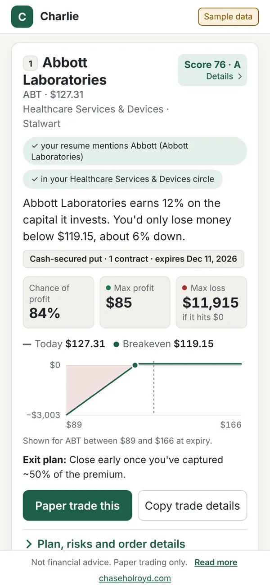

Investing tool · paper trading · demo live
Charlie: Invest in What You Know
Most trading apps start from the trade, so beginners act on hype instead of businesses they understand. Charlie starts from the person: it maps what you already know to companies, then offers the most conservative way to act on one.

The problem
Most trading apps start from the trade, so beginners act on hype instead of businesses they understand. A new investor learning options needs ideas from companies their own job and life already taught them.
What I built
- Profile: a resume, interests and brands become ranked sectors, each with the evidence behind it.
- Today: 1-3 ideas, each with the exact trade, chance of profit, max loss in dollars, breakeven, a payoff chart and an exit plan.
- Paper portfolio: one click opens a paper position, marked to current prices, and it is flagged when its exit plan says to act.
How it works
Companies in your circle of competence are scored against a Charlie Munger-style checklist. The risk slider starts conservative (covered calls and cash-secured puts) and widens only when you choose. Uncovered calls and same-day options are never offered.
The limit: the demo uses a fictional person and simulated prices. The local app can use free live data and falls back to demo data, and its badge says Demo data whenever numbers are simulated.
Product calls
- Person before trade. Ideas come only from sectors the profile supports, and each card says why it is in your circle.
- Safety in code, not copy. Position sizing and banned strategies are enforced and tested in the engine, not left to a disclaimer.
- Paper only. Charlie never places real orders and is not financial advice.
Proof
- Tested360+ unit and end-to-end tests, with CI on every change.
- Demo checkedA repo check fails the demo build if it needs keys or hosts beyond the Pyodide CDN, or loses its strict content security policy.
- Local firstThe local app answers only to localhost and refuses writes from other sites.
- DocumentedDecision records and a research log in the repo.
Try it
Open the demo. It turns a fictional resume into paper trades in your browser, with no sign-up. Reset demo clears it.
Status and what's next
The demo is live and the engine runs in the browser with Pyodide. The next feature (an earnings check or paper trading through a broker) has not been chosen.
A note on the demo
The demo turns a fictional resume into paper trades on simulated prices, kept only in your browser: no sign-up, and Reset demo clears it. Not financial advice.